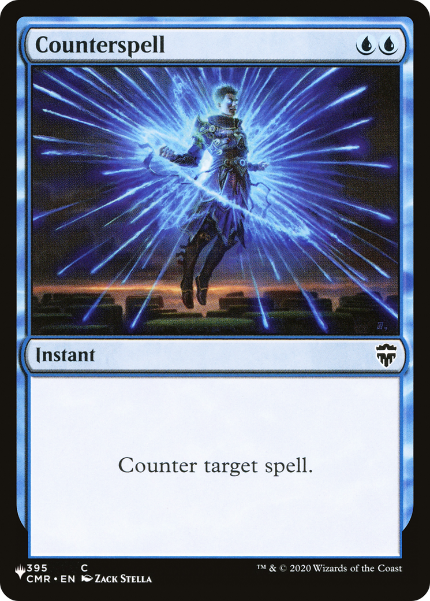

To "play" a card means to take it from your hand and "get it into the game", so to speak. Different cards do different things, but you'll almost always have to first play them before you can put them to use to win the game.
By default, you can only play cards from your hand. There might be some ability that changes this; for example, Yawgmoth's Will lets you replay cards from your graveyard (discard pile). But you only have to worry about that if there's a card that says that's an option.
The exact way to play a card depends on the card's type. If it's a land, playing it just means to take it from your hand and put it onto the battlefield. Nonland cards cost resources in order to play them, called "mana". The amount of mana you need is determined by its mana cost in the top right corner. For example, Yawgmoth's Will costs one black mana (that's what the black skull symbol means), along with 2 mana of any color.
Lands are what produce mana, so the number of lands you have represent the amount of resources you have to play other cards. You can only play one land per turn, so the resources available to you slowly scale up over the course of the game. To use a land to play another card, you just turn it sideways to represent that it's been used, called "tapping" the land. Your lands untap at the beginning of each new turn, so you get to use each land once per turn.
Different lands produce different colors of mana, which will be clearly stated in its text box. You can also tell by looking at its type: Plains make white mana, Islands make blue, Swamps make black, Mountains make red, and Forests make green. (If one land has multiple types, you choose which color it makes each time you tap it; it doesn't make both.
So to play Yawgmoth's Will, you'd turn three of your lands sideways; one of them must produce black mana, and the other two can be any lands at all.
When you play a nonland card (also known as "casting" it), it goes onto the "stack". This is just a holding area to see if anyone else wants to interact with it. For example, someone else could tap two Islands and cast Counterspell, countering your Yawgmoth's Will. (A "spell" is just any card that's on the stack.) If Yawgmoth's Will is countered, it's put straight into the graveyard and doesn't do anything.
For any spell that isn't countered, it resolves. If it's an instant or sorcery, that means you do whatever it says and then put it into the graveyard. If it's anything else, that means you put it onto the battlefield (the table in front of you), and it stays there until something removes it.
Cards on the battlefield generally have some abilities, written in the text box. These might just be statements about the game, like "players can't cast creature spells". They might also be instructions to perform an action at a specific time, like "whenever you draw a card, you gain 1 life". Triggered abilities like these go onto the stack just like spells, and players can counter them and interact in other ways.
Lastly there are activated abilities, which you can choose to use at any time. These have a cost, followed by a colon, followed by a description of what they do. These work very similarly to casting a spell: you pay the cost, then the ability goes on the stack and people can interact with it, then it resolves and carries out its effect.
Abilities on a card are one of the main reasons to play them, so be sure to read them carefully! One thing to pay attention to is whether the spell or ability has any targets. A "target" is identified by the word "target", and a spell that has targets can't be cast unless that many legal targets exist. For example, Reckless Spite requites two target nonblack creatures in order to be cast. If there's only one nonblack creature on the battlefield, you can't cast it to destroy only that creature.
Remember that it's possible to interact with a spell on the stack, after it's been cast, but before it resolves. If you cast Reckless Spite targeting two of your opponent's creatures, your opponent could respond with a spell that lets them save a creature by returning it to their hand. If that happens, Reckless Spite will still destroy the other one when it resolves, and you'll lose the 5 life. However, if your opponent saves both of their creatures, then Reckless Spite has no legal targets at all, so it doesn't resolve at all and you won't lose the 5 life. In general, when a targeted spell tries to resolve, it checks to see if it still has at least one legal target. If it does, then it still does as much as it can. But if all of its targets have become illegal, the spell gives up and doesn't do anything.